Karumai
Karumai · Iwate
Karumai
Highlighted on the Iwate map.
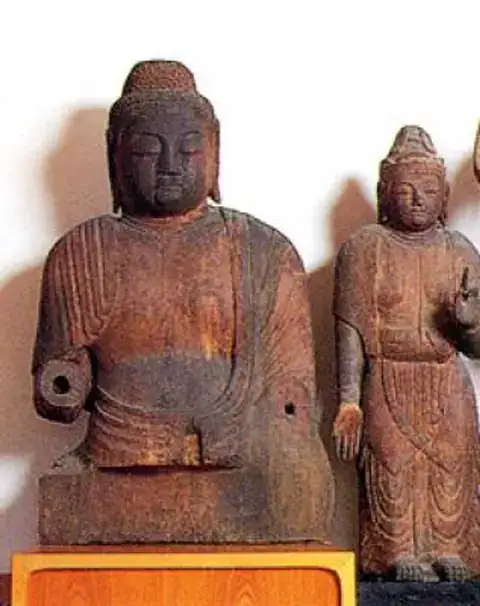
Stay
旅館 瀧村屋
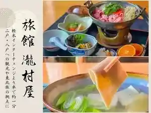
Ryokan Takimura Ya
Ryokan inn in Karumai, Iwate.
Dining
ミル・みるハウス
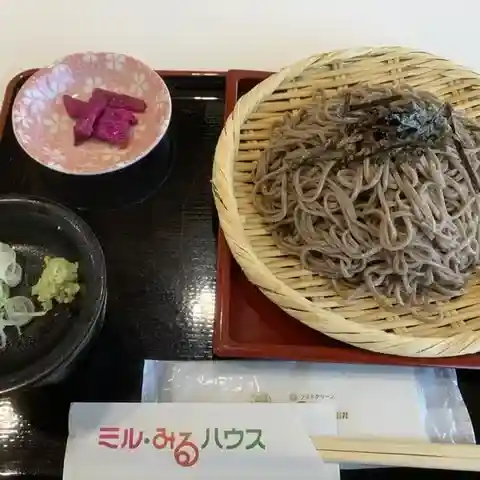
Miru Miru Hausu
Shokudo diner in Karumai, Iwate.
こじま食堂
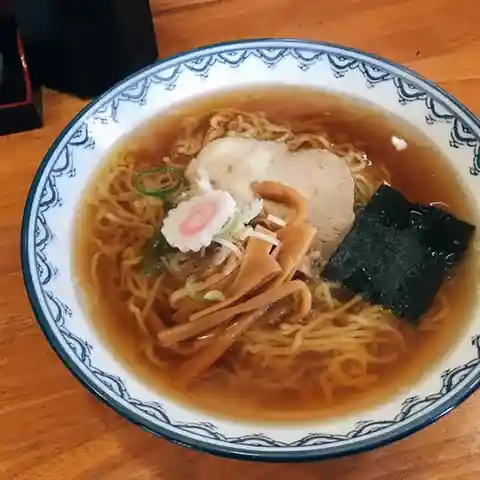
Kojima Shokudou
Ramen shop in Karumai, Iwate.
軽米食堂
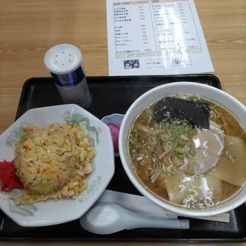
Karumai Shokudou
Local-cuisine restaurant in Karumai, Iwate.
ミニストップ 折爪SA下り店
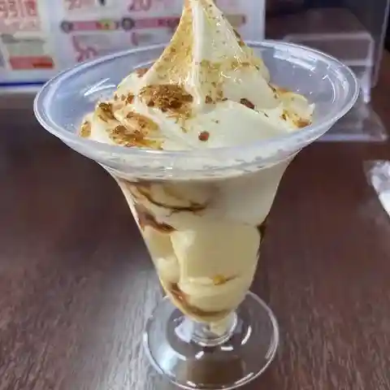
Minisutoppu Oritsume Sa Kudari Mise
Convenience store in Karumai, Iwate.
ビーノカプチーノ
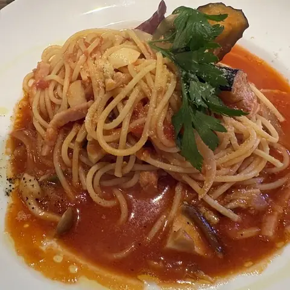
Biinokapuchiino
Hamburg-steak restaurant in Karumai, Iwate.
IMARU CAFE
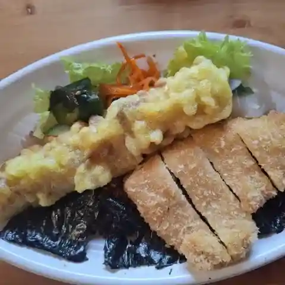
Imaru Cafe
Café in Karumai, Iwate.
ミニストップ 折爪SA上り店
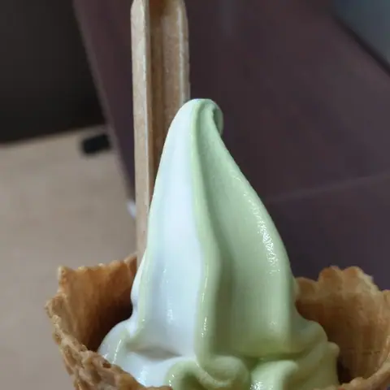
Minisutoppu Oritsume Sa Nobori Mise
Convenience store in Karumai, Iwate.
内まる屋
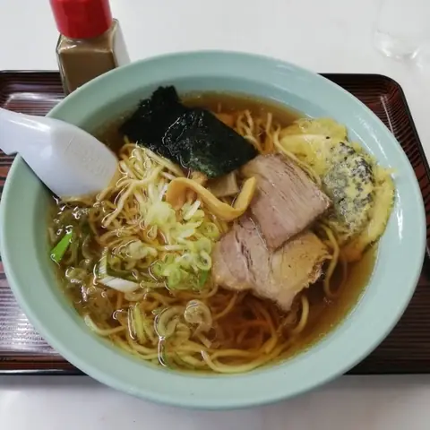
Nai Maru Ya
Shokudo diner in Karumai, Iwate.
ロッキー 24
Rokkii 24
Ramen shop in Karumai, Iwate.
小島食堂
Kojima Shokudou
Shokudo diner in Karumai, Iwate.
鮨禅
Sushi Zen
Sushi restaurant in Karumai, Iwate.
LAWSON 岩手軽米店
Lawson Iwate Karumai Mise
Convenience store in Karumai, Iwate.
千本松本舗
Senbon Matsumoto Ho
Western sweets shop in Karumai, Iwate.
ヤマダ菓子店
Yamada Kashi Mise
Cake shop in Karumai, Iwate.
工藤仕出し店
Kudou Shidashi Mise
Bento shop in Karumai, Iwate.
なかまっち たごや
Nakamatchi Tagoya
Gelato and ice-cream shop in Karumai, Iwate.
味彩のいのうえ
Aji Sai Noinoue
Bento shop in Karumai, Iwate.
Sights
Millet Park Handmade Soba
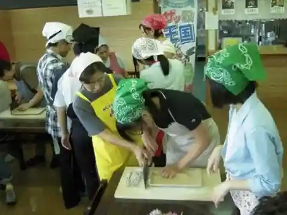
At Millet Plaza in Millet Park, the handmade soba noodles made from 100% local buckwheat flour ground in a stone mill are exquisite.
Uchimaruya
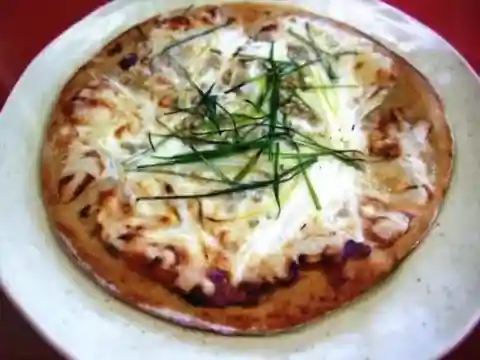
You can enjoy locally produced dishes such as cereal set meals and Dattasoba.
Senbonmatsu (Local Sweet)
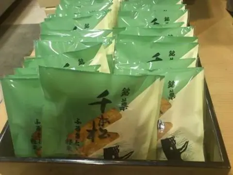
"Senbonmatsu" was named after the town's designated natural monument.
Tartary Buckwheat Soba
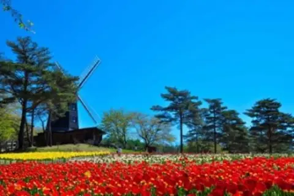
Tartary soba is said to contain 100 times more rutin, which strengthens capillaries, than Japanese soba.
Tartary Buckwheat Soba and Dried Grain Noodles
Made at a long-established noodle factory in Karumai town, using traditional natural drying methods.
Soba Mooncakes
Mooncakes are a sweet that originated in China and are said to have been served during celebrations of the Mid-Autumn Harvest Moon.
Sarunashi (Hardy Kiwi)
The fruit, which ripens to a light green color in autumn, is high in vitamin C and is said to be effective as a tonic and to stimulate the appetite.
Harutaka Dondon Market
A farm direct sales store with freshly harvested vegetables and handmade sweets.
Gokoku Hojo Cake
Pound ke0ki is made with butter, flour, sugar, and eggs. To the ingredients of the cake, millet, buckwheat, amaranth, green beans and black beans containing savonin and linoleic acid are added to lock in the power of minor grains for a luxurious finish.
Heartful Sportsland
Heartful Sports Land, surrounded by a rich natural environment full of greenery, was established as a place for intergenerational interaction where everyone from infants to the elderly can enjoy health promotion together.
History and Folklore Museum / Hall of History and Folk Tales
History and Folklore Museum/Hall of History and Folklore
Tokurakuji Temple
Tokuraku-ji Temple (Soto sect) was founded in 1558 as a branch temple of Hoko-ji Temple in Nagawa-cho, Aomori Prefecture.
Mill Miru House
Located at the confluence of National Routes 340 and 395, this facility not only sells special products from Karumai Town and sells agricultural products directly, but also serves as a restaurant and rest area.
Yukiyagawa Dam Forest Park Karumai
A beautiful forest park where water and greenery are in harmony with the forest and dam landscape.